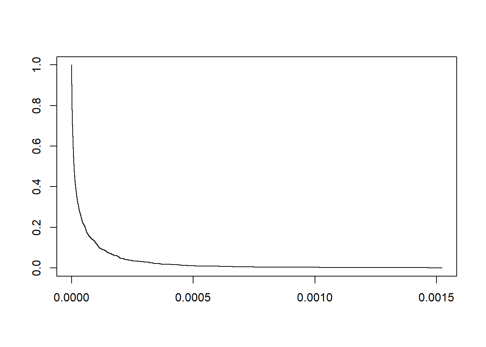
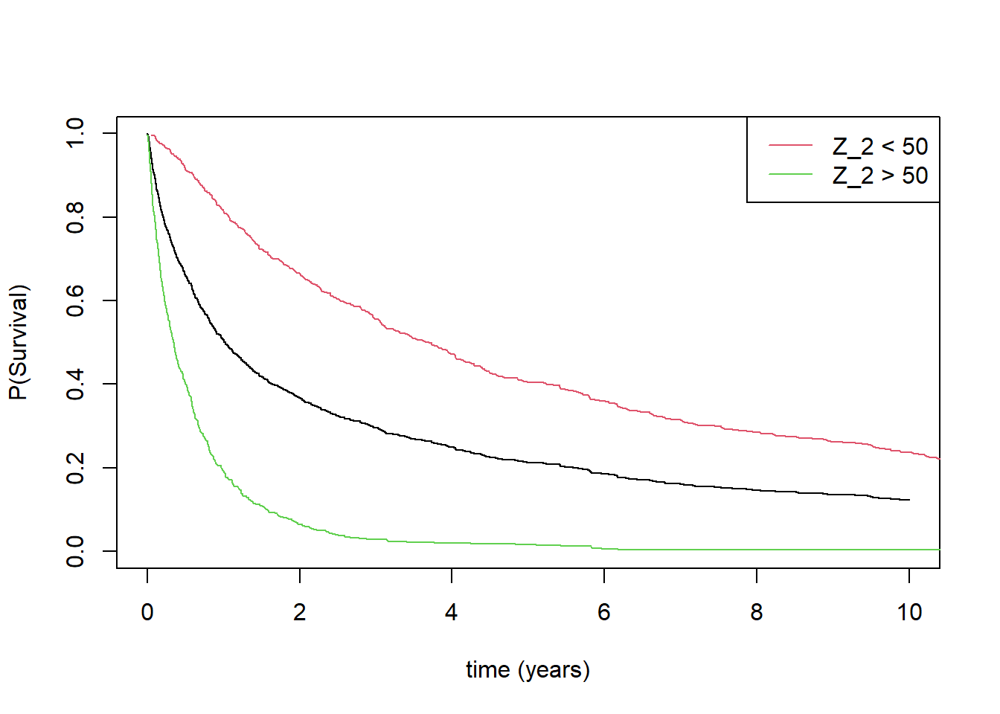
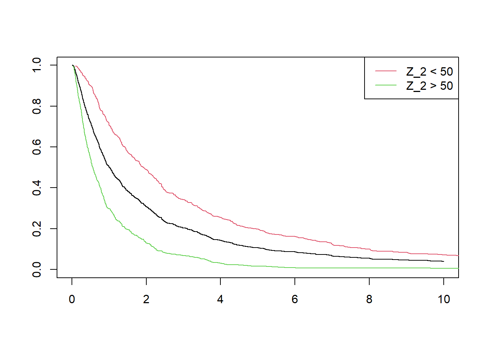

The European Medicines Agency recently released a letter of support regarding covariate adjustment in RCTs with time-to-event endpoints.
I found it interesting, not because of the specific prognostic covariate in question, but rather the Discussion of statistical methodology section, where the more general question was addressed of whether a Cox model adjusting for any covariate is acceptable. To quote:
The simulation studies performed as outlined rely on the proportional hazard assumption. In case of non-proportional hazards there is the risk of a considerable increase in Type 1 error Jiang H et al.,(Stat Med (2008) when using adjusted Cox regression […] The standard approach to analysis of time-to-event data in clinical trials in oncology is to use a log-rank test, with or without stratification factors, for hypothesis testing for a primary time-to-event endpoint. Cox Models with adjustment for covariates are only used for estimation of treatment effects.
In informal conversations with colleagues working in oncology over recent years, I’ve often heard that performing a stratified log-rank test is considered OK, but including a (continuous, say) covariate as an additional term in a Cox model, and then performing the primary hypothesis test via this model, would be dismissed out of hand.
I’ve wondered where this received wisdom comes from. My intuition was that, having made the assumptions necessary to perform the stratified log-rank test, it’s a relatively mild additional assumption to use the Cox model with the covariate as an additional term instead.
So I’m glad that this letter illuminates (perhaps) the source of this line of argument.
Here, \(Z_1\) is the treatment indicator, and \(Z_2\) is a covariate with distribution \(N(\mu = 50, \sigma^2 = 100)\).
A Cox model \(h(t) = h_0(t)\exp(\beta_1 Z_1 + \beta_2 Z_2)\) is used for analysis with a test based on the estimated \(\hat{\beta}_1\).
Case 1: no censoring
Jiang H et al.,Stat Med (2008) claim that the two-sided type I error rate increases from nominal 5% to about 10%. I’ll reproduce that here (although I’ll show the one-sided alpha increases from 2.5% to about 5%)…
library(survival)## function to simulate data from one trial,## fit Cox model, and estimate adjusted hazard## ratio (treatment effect, beta_1)sim_one_trial <-function(n, beta_0 =-4, beta_2 =-0.15){ z_1 <-rep(c("c", "e"), each = n) z_2 <-rnorm(2* n, mean =50, sd =10) t_c_e <-exp(rnorm(2* n, mean = beta_0 + beta_2 * z_2)) events <-rep(1, 2* n) fit <-coxph(Surv(t_c_e, events) ~ z_1 + z_2) z <-summary(fit)$coef[1, "z"]}## simulate 1000 trials, with n = 200 per armset.seed(325)res <- purrr::map_dbl(rep(200, 1000), sim_one_trial)## estimate type I error ratemean(res <qnorm(0.025))
[1] 0.054
So that’s it then? This approach is a no-no?
Well…maybe. But first let’s take a closer look at this model and this particular parameter constellation. To do that I simulate 1,000 observations from the model, and then plot the Kaplan-Meier estimate…
n <-1000beta_0 =-4beta_2 =-0.15z_2 <-rnorm(n, mean =50, sd =10)surv_t <-exp(rnorm(n, mean = beta_0 + beta_2 * z_2))fit_km <-survfit(Surv(surv_t, rep(1, n)) ~1)plot(fit_km, conf.int =FALSE)

This is a strange choice of time scale. But that’s not really important. I can multiply the survival times by 100,000 to get a more intuitive scale (years, say). Let’s try again…
The next thing I’ll do is plot the KM curve of patients with an above average covariate value, \(Z_2 > 50\), versus those with a below average covariate value, \(Z_2 < 50\).
below_50 <-survfit(Surv(surv_t[z_2 <50], rep(1, n)[z_2 <50]) ~1)above_50 <-survfit(Surv(surv_t[z_2 >50], rep(1, n)[z_2 >50]) ~1)plot(fit_km, conf.int =FALSE, xlim =c(0,10),xlab ="time (years)",ylab ="P(Survival)")points(below_50$time, below_50$surv, type ="l", col =2)points(above_50$time, above_50$surv, type ="l", col =3)legend("topright", c("Z_2 < 50", "Z_2 > 50"),lty =c(1,1),col =c(2,3))

This shows that \(Z_2\) is an enormously prognostic covariate. Let’s look at the period-specific average hazard ratios comparing “Z_2 > 50” versus “Z_2 < 50”, for the period [0, 1] years, and then for the period 1+ years…
Call:
coxph(formula = Surv(beyond_one_t, beyond_one_event) ~ group)
coef exp(coef) se(coef) z p
groupTRUE 1.352 3.867 0.121 11.17 <2e-16
Likelihood ratio test=98.73 on 1 df, p=< 2.2e-16
n= 506, number of events= 506
Ok, so the average hazard ratio between these two groups is about 9 during the first year (where around half of the events occur), then the average hazard ratio is much lower (but still high) after year one.
What happens when we change the parameter constellation so that \(Z_2\) is still very strongly prognostic, but perhaps something a bit more reasonable? Something like this…
n <-1000beta_0 =-4-0.075*50beta_2 =-0.15+0.075z_2 <-rnorm(n, mean =50, sd =10)surv_t <-exp(rnorm(n, mean = beta_0 + beta_2 * z_2)) *100000fit_km <-survfit(Surv(surv_t, rep(1, n)) ~1)below_50 <-survfit(Surv(surv_t[z_2 <50], rep(1, n)[z_2 <50]) ~1)above_50 <-survfit(Surv(surv_t[z_2 >50], rep(1, n)[z_2 >50]) ~1)plot(fit_km, conf.int =FALSE, xlim =c(0,10))points(below_50$time, below_50$surv, type ="l", col =2)points(above_50$time, above_50$surv, type ="l", col =3)legend("topright", c("Z_2 < 50", "Z_2 > 50"),lty =c(1,1),col =c(2,3))

Then, repeating the simulation to estimate the type 1 error rate…
res <- purrr::map_dbl(rep(200, 10000), sim_one_trial,beta_0 =-4-0.075*50, beta_2 =-0.15+0.075)mean(res <qnorm(0.025))
[1] 0.0376
Case 2: with censoring
Jiang H et al.,Stat Med (2008) show that with censoring rates of 20% and 40%, the type 1 error inflation is similar to the no censoring case.
However, their censoring mechanism is a competing exponential distribution. I don’t think this is realistic. Owing to the heavy tail of the log-normal distribution, these trials would carry on for decades.
Let’s repeat the simulations but with administrative censoring driven by a trial recruitment process that is uniform and lasts one year, plus a total trial duration of three years…
## function to simulate data from one trial,## fit Cox model, and estimate adjusted hazard## ratio (treatment effect, beta_1)sim_one_trial_with_censoring <-function(n, beta_0 =-4, beta_2 =-0.15,trial_duration =3e-06, rec_duration =1e-06){ z_1 <-rep(c("c", "e"), each = n) z_2 <-rnorm(2* n, mean =50, sd =10) t_c_e <-exp(rnorm(2* n, mean = beta_0 + beta_2 * z_2)) rec <-runif(2* n, 0, rec_duration) events <- rec + t_c_e < trial_duration t_c_e[events ==0] <- (trial_duration - rec)[events ==0] fit <-coxph(Surv(t_c_e, events) ~ z_1 + z_2) z <-summary(fit)$coef[1, "z"]}
Firstly for the original (extreme) example…
## simulate 1000 trials, with n = 200 per armres <- purrr::map_dbl(rep(200, 10000), sim_one_trial_with_censoring)## estimate type I error ratemean(res <qnorm(0.025))
[1] 0.0461
and then for the slightly more realistic one…
## simulate 1000 trials, with n = 200 per armres <- purrr::map_dbl(rep(200, 10000), sim_one_trial_with_censoring,beta_0 =-4-0.075*50,beta_2 =-0.15+0.075)## estimate type I error ratemean(res <qnorm(0.025))
[1] 0.0287
Conclusions
My intuition before writing this blogpost was that I wouldn’t be too concerned about type 1 error inflation when fitting a Cox model with a continuous covariate entering as a simple linear term, even when that model is inevitably wrong.
Have I changed my mind? Not yet. I’m guessing, with enough effort, someone could produce a realistic-looking example where there is a considerable increase in Type 1 error. But, in my opinion, the example cited by the EMA in their letter doesn’t provide that (it’s no slam dunk, at least).